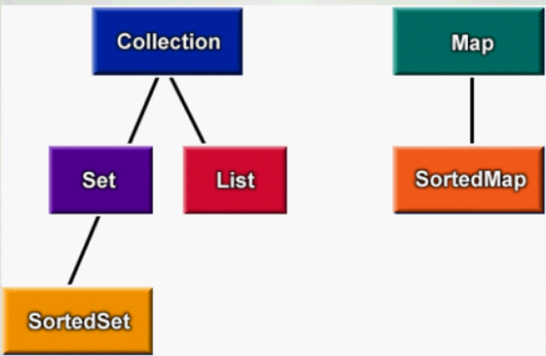

IDE的详细介绍
- 对于java中的常量的命名规则：
- 所有单词的字母都是大写，如果有多个单词，那么使用下划线链接即可。比如说：
- public static final int AGE_OF_PERSON = 20;
- 常量起的作用：（代码如下：）
public class Authorization
{
public static final int MANAGER = 1;
public static final int DEPARTMENT = 2;
public static final int EMPLOYEE = 3;
}
public class Test
{
public boolean canAccess(int access)
{
if (access == Authorization.MANAGER)
{
return true;//經理訪問權限
}
if(access == Authorization.DEPARTMENT)
{
return false;//部門經理的訪問權限
}
if (access == Authorization.EMPLOYEE)
{
return false;//普通員工的訪問權限
}
return false;
}
}- 在java中声明final常量时通常都会加上static关键字，这样对对象的每个实例都会访问唯一一份的常量值。 Java中的集合框架

- 上面是集合框架的接口
- 所谓框架就是一個类库的集合。集合框架就是一个用来表示和操作集合的统一架构，包含了实现集合的接口与类。 IDE（Integrated Development Environment）（集成开发环境）
- 第一個：NetBeans（https://www.NetBeans.org/）
- 第二個：JBuilder（http://edn.embarcadero.com/cn/jbuilder）
- 第三個：IntelliJ IDEA（https://www.jetbrains.com/idea/）
- 第四個：Eclipse（日蚀、月蚀）（https://www.eclipse.org/downloads/）